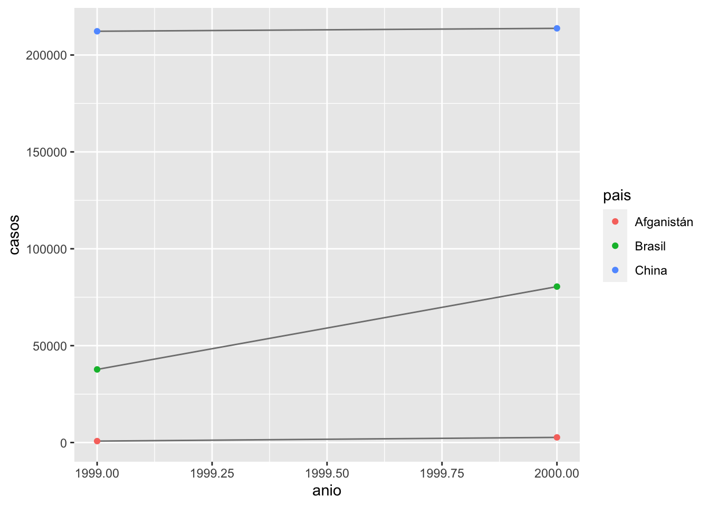
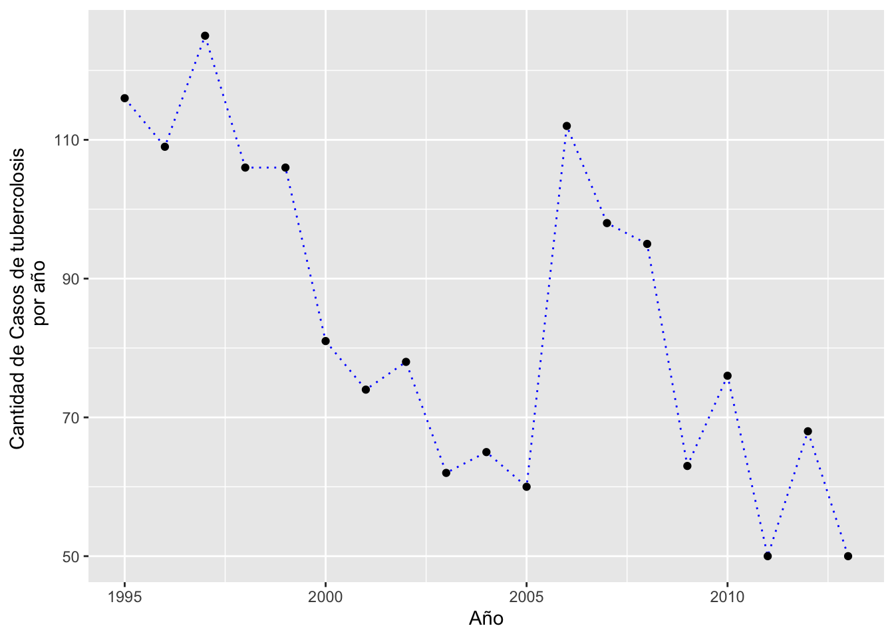

C8_E12_I12_Datos_Ordenados, Tidyr
BIOL4026
Raymond L. Tremblay
Fecha de la ultima revisión
## [1] "2021-04-07"El tema proviene de los siguientes sitios.
English: https://r4ds.had.co.nz/tidy-data.html
Español: https://es.r4ds.hadley.nz/datos-ordenados.html
Temas: Datos Ordenados
El paquete tidyr
Ver vignettes
library(tidyverse)
library(datos)tabla1## # A tibble: 6 x 4
## pais anio casos poblacion
## <chr> <int> <int> <int>
## 1 Afganistán 1999 745 19987071
## 2 Afganistán 2000 2666 20595360
## 3 Brasil 1999 37737 172006362
## 4 Brasil 2000 80488 174504898
## 5 China 1999 212258 1272915272
## 6 China 2000 213766 1280428583tabla2## # A tibble: 12 x 4
## pais anio tipo cuenta
## <chr> <int> <chr> <int>
## 1 Afganistán 1999 casos 745
## 2 Afganistán 1999 población 19987071
## 3 Afganistán 2000 casos 2666
## 4 Afganistán 2000 población 20595360
## 5 Brasil 1999 casos 37737
## 6 Brasil 1999 población 172006362
## 7 Brasil 2000 casos 80488
## 8 Brasil 2000 población 174504898
## 9 China 1999 casos 212258
## 10 China 1999 población 1272915272
## 11 China 2000 casos 213766
## 12 China 2000 población 1280428583tabla3## # A tibble: 6 x 3
## pais anio tasa
## <chr> <int> <chr>
## 1 Afganistán 1999 745/19987071
## 2 Afganistán 2000 2666/20595360
## 3 Brasil 1999 37737/172006362
## 4 Brasil 2000 80488/174504898
## 5 China 1999 212258/1272915272
## 6 China 2000 213766/1280428583tabla4a## # A tibble: 3 x 3
## pais `1999` `2000`
## <chr> <int> <int>
## 1 Afganistán 745 2666
## 2 Brasil 37737 80488
## 3 China 212258 213766tabla4b## # A tibble: 3 x 3
## pais `1999` `2000`
## <chr> <int> <int>
## 1 Afganistán 19987071 20595360
## 2 Brasil 172006362 174504898
## 3 China 1272915272 1280428583tabla1 %>%
mutate(tasa = casos/poblacion * 10000) ## # A tibble: 6 x 5
## pais anio casos poblacion tasa
## <chr> <int> <int> <int> <dbl>
## 1 Afganistán 1999 745 19987071 0.373
## 2 Afganistán 2000 2666 20595360 1.29
## 3 Brasil 1999 37737 172006362 2.19
## 4 Brasil 2000 80488 174504898 4.61
## 5 China 1999 212258 1272915272 1.67
## 6 China 2000 213766 1280428583 1.67tabla1 %>%
count(anio, wt = casos)## # A tibble: 2 x 2
## anio n
## <int> <int>
## 1 1999 250740
## 2 2000 296920# Visualizar cambios en el tiempo
library(ggplot2)
ggplot(tabla1, aes(x=anio, y=casos)) +
geom_line(aes(group = pais), colour = "grey50") +
geom_point(aes(colour = pais))
Recrea el gráfico que muestra el cambio en el número de casos usando la tabla2 en lugar de la tabla1. ¿Qué necesitas hacer en primero?
Student results
tabla2## # A tibble: 12 x 4
## pais anio tipo cuenta
## <chr> <int> <chr> <int>
## 1 Afganistán 1999 casos 745
## 2 Afganistán 1999 población 19987071
## 3 Afganistán 2000 casos 2666
## 4 Afganistán 2000 población 20595360
## 5 Brasil 1999 casos 37737
## 6 Brasil 1999 población 172006362
## 7 Brasil 2000 casos 80488
## 8 Brasil 2000 población 174504898
## 9 China 1999 casos 212258
## 10 China 1999 población 1272915272
## 11 China 2000 casos 213766
## 12 China 2000 población 1280428583tabla1## # A tibble: 6 x 4
## pais anio casos poblacion
## <chr> <int> <int> <int>
## 1 Afganistán 1999 745 19987071
## 2 Afganistán 2000 2666 20595360
## 3 Brasil 1999 37737 172006362
## 4 Brasil 2000 80488 174504898
## 5 China 1999 212258 1272915272
## 6 China 2000 213766 1280428583tabla2 %>%
select(tipo, pais, anio, cuenta) %>%
group_by(pais)%>%
filter(tipo=="casos")%>%
ggplot(aes(anio, cuenta)) +
geom_line(aes(group = pais), colour = "grey50") +
geom_point(aes(colour = pais))- Pivotar
- Datos “largos”
tabla4a## # A tibble: 3 x 3
## pais `1999` `2000`
## <chr> <int> <int>
## 1 Afganistán 745 2666
## 2 Brasil 37737 80488
## 3 China 212258 213766pivot_longer
tabla4a %>%
pivot_longer(cols = c('1999', '2000'),
names_to = "anio",
values_to = "Num_bacteria")## # A tibble: 6 x 3
## pais anio Num_bacteria
## <chr> <chr> <int>
## 1 Afganistán 1999 745
## 2 Afganistán 2000 2666
## 3 Brasil 1999 37737
## 4 Brasil 2000 80488
## 5 China 1999 212258
## 6 China 2000 213766Haz pivot table para la tabla4b
tidy4a <- tabla4a %>%
pivot_longer(cols = c(`1999`, `2000`), names_to = "anio", values_to = "casos")
tidy4a## # A tibble: 6 x 3
## pais anio casos
## <chr> <chr> <int>
## 1 Afganistán 1999 745
## 2 Afganistán 2000 2666
## 3 Brasil 1999 37737
## 4 Brasil 2000 80488
## 5 China 1999 212258
## 6 China 2000 213766tidy4b <- tabla4b %>%
pivot_longer(cols = c(`1999`, `2000`), names_to = "anio", values_to = "poblacion")
left_join(tidy4a, tidy4b)## # A tibble: 6 x 4
## pais anio casos poblacion
## <chr> <chr> <int> <int>
## 1 Afganistán 1999 745 19987071
## 2 Afganistán 2000 2666 20595360
## 3 Brasil 1999 37737 172006362
## 4 Brasil 2000 80488 174504898
## 5 China 1999 212258 1272915272
## 6 China 2000 213766 1280428583- Datos “anchos”
Pivot ancho
tabla2## # A tibble: 12 x 4
## pais anio tipo cuenta
## <chr> <int> <chr> <int>
## 1 Afganistán 1999 casos 745
## 2 Afganistán 1999 población 19987071
## 3 Afganistán 2000 casos 2666
## 4 Afganistán 2000 población 20595360
## 5 Brasil 1999 casos 37737
## 6 Brasil 1999 población 172006362
## 7 Brasil 2000 casos 80488
## 8 Brasil 2000 población 174504898
## 9 China 1999 casos 212258
## 10 China 1999 población 1272915272
## 11 China 2000 casos 213766
## 12 China 2000 población 1280428583tabla2 %>%
pivot_wider(names_from = tipo, values_from = cuenta)## # A tibble: 6 x 4
## pais anio casos población
## <chr> <int> <int> <int>
## 1 Afganistán 1999 745 19987071
## 2 Afganistán 2000 2666 20595360
## 3 Brasil 1999 37737 172006362
## 4 Brasil 2000 80488 174504898
## 5 China 1999 212258 1272915272
## 6 China 2000 213766 1280428583Ejercicio
¿Por qué falla el siguiente código? Busca una solución.
tabla4a## # A tibble: 3 x 3
## pais `1999` `2000`
## <chr> <int> <int>
## 1 Afganistán 745 2666
## 2 Brasil 37737 80488
## 3 China 212258 213766tabla4a %>%
pivot_longer(c('1999', '2000'), names_to = "anio", values_to = "casos")## # A tibble: 6 x 3
## pais anio casos
## <chr> <chr> <int>
## 1 Afganistán 1999 745
## 2 Afganistán 2000 2666
## 3 Brasil 1999 37737
## 4 Brasil 2000 80488
## 5 China 1999 212258
## 6 China 2000 213766¿Qué pasaría si trataras de pivotar esta tabla a lo ancho? ¿Por qué? ¿Cómo podrías agregar una nueva columna que identifique de manera única cada valor?
personas <- tribble(
~nombre, ~nombres, ~valores,
#-----------------|--------|------
"Phillip Woods", "edad", 45,
"Phillip Woods", "estatura", 186,
"Phillip Woods", "edad", 50,
"Jessica Cordero", "edad", 37,
"Jessica Cordero", "estatura", 156
)
personas## # A tibble: 5 x 3
## nombre nombres valores
## <chr> <chr> <dbl>
## 1 Phillip Woods edad 45
## 2 Phillip Woods estatura 186
## 3 Phillip Woods edad 50
## 4 Jessica Cordero edad 37
## 5 Jessica Cordero estatura 156personas %>%
pivot_wider(names_from = nombres, values_from = valores)## # A tibble: 2 x 3
## nombre edad estatura
## <chr> <list> <list>
## 1 Phillip Woods <dbl [2]> <dbl [1]>
## 2 Jessica Cordero <dbl [1]> <dbl [1]>personas2 <- tribble(
~nombre, ~nombres, ~valores, ~tiempo,
#-----------------|--------|------|----
"Phillip Woods", "edad", 45, "t1",
"Phillip Woods", "estatura", 186, "t1",
"Phillip Woods", "edad", 50, "t2",
"Jessica Cordero", "edad", 37, "t1",
"Jessica Cordero", "estatura", 156, "t1",
)
personas2 %>%
pivot_wider(names_from = nombres, values_from = valores)## # A tibble: 3 x 4
## nombre tiempo edad estatura
## <chr> <chr> <dbl> <dbl>
## 1 Phillip Woods t1 45 186
## 2 Phillip Woods t2 50 NA
## 3 Jessica Cordero t1 37 156- Separar y Unir
- Valores faltantes
- Estudio de casos
- Datos no ordenados
Datos Ordenados
- Ejercicios:
Hacer los ejercicios en la sección 12.2.1 del libro en español
Pivotar
- Datos “largos”
- Datos “anchos”
Funciones
- pivot_longer()
- left_join()
- pivot_wider()
- Ejercicios:
Hacer los ejercicios en la sección 12.3.3 del libro en español
Separar y Unir
Funciones
- separate()
tabla3## # A tibble: 6 x 3
## pais anio tasa
## <chr> <int> <chr>
## 1 Afganistán 1999 745/19987071
## 2 Afganistán 2000 2666/20595360
## 3 Brasil 1999 37737/172006362
## 4 Brasil 2000 80488/174504898
## 5 China 1999 212258/1272915272
## 6 China 2000 213766/1280428583El default es que weste sepeardo por “/”.
tabla3## # A tibble: 6 x 3
## pais anio tasa
## <chr> <int> <chr>
## 1 Afganistán 1999 745/19987071
## 2 Afganistán 2000 2666/20595360
## 3 Brasil 1999 37737/172006362
## 4 Brasil 2000 80488/174504898
## 5 China 1999 212258/1272915272
## 6 China 2000 213766/1280428583tabla3 %>%
separate(tasa, into = c("casos", "poblacion"))## # A tibble: 6 x 4
## pais anio casos poblacion
## <chr> <int> <chr> <chr>
## 1 Afganistán 1999 745 19987071
## 2 Afganistán 2000 2666 20595360
## 3 Brasil 1999 37737 172006362
## 4 Brasil 2000 80488 174504898
## 5 China 1999 212258 1272915272
## 6 China 2000 213766 1280428583tabla3 %>%
separate(tasa, into = c("casos", "poblacion"), sep = "/")## # A tibble: 6 x 4
## pais anio casos poblacion
## <chr> <int> <chr> <chr>
## 1 Afganistán 1999 745 19987071
## 2 Afganistán 2000 2666 20595360
## 3 Brasil 1999 37737 172006362
## 4 Brasil 2000 80488 174504898
## 5 China 1999 212258 1272915272
## 6 China 2000 213766 1280428583personas2 <- tribble(
~nombre, ~nombres, ~edad_ninos, ~tiempo,
#-----------------|--------|------|----
"Phillip Woods", "edad", "45;5", "t1",
"Phillip Woods", "estatura", "186;6", "t1"
)
personas2## # A tibble: 2 x 4
## nombre nombres edad_ninos tiempo
## <chr> <chr> <chr> <chr>
## 1 Phillip Woods edad 45;5 t1
## 2 Phillip Woods estatura 186;6 t1personas2 %>%
separate(edad_ninos, into = c("edad", "ninos"), sep = ";")## # A tibble: 2 x 5
## nombre nombres edad ninos tiempo
## <chr> <chr> <chr> <chr> <chr>
## 1 Phillip Woods edad 45 5 t1
## 2 Phillip Woods estatura 186 6 t1unite()
- unite() funcion para unir dos columnas
tabla5 ## # A tibble: 6 x 4
## pais siglo anio tasa
## <chr> <chr> <chr> <chr>
## 1 Afganistán 19 99 745/19987071
## 2 Afganistán 20 00 2666/20595360
## 3 Brasil 19 99 37737/172006362
## 4 Brasil 20 00 80488/174504898
## 5 China 19 99 212258/1272915272
## 6 China 20 00 213766/1280428583tabla5 %>%
unite(nueva, siglo, anio)## # A tibble: 6 x 3
## pais nueva tasa
## <chr> <chr> <chr>
## 1 Afganistán 19_99 745/19987071
## 2 Afganistán 20_00 2666/20595360
## 3 Brasil 19_99 37737/172006362
## 4 Brasil 20_00 80488/174504898
## 5 China 19_99 212258/1272915272
## 6 China 20_00 213766/1280428583tabla5 %>%
unite(nueva, siglo, anio, sep="/")## # A tibble: 6 x 3
## pais nueva tasa
## <chr> <chr> <chr>
## 1 Afganistán 19/99 745/19987071
## 2 Afganistán 20/00 2666/20595360
## 3 Brasil 19/99 37737/172006362
## 4 Brasil 20/00 80488/174504898
## 5 China 19/99 212258/1272915272
## 6 China 20/00 213766/1280428583# que pasa si pones sep=";"?- Ejercicios:
Hacer los ejercicios en la sección 12.4.3 del libro en español
tibble(x = c("a,b,c", "d,e,f,g", "h,i,j")) ## # A tibble: 3 x 1
## x
## <chr>
## 1 a,b,c
## 2 d,e,f,g
## 3 h,i,jtibble(x = c("a,b,c", "d,e,f,g", "h,i,j")) %>%
separate(x, c("one", "two", "three", "four"))## # A tibble: 3 x 4
## one two three four
## <chr> <chr> <chr> <chr>
## 1 a b c <NA>
## 2 d e f g
## 3 h i j <NA>tibble(x = c("a,b,c", "d,e", "f,g,i")) %>%
separate(x, c("one", "two", "three"))## # A tibble: 3 x 3
## one two three
## <chr> <chr> <chr>
## 1 a b c
## 2 d e <NA>
## 3 f g iValores faltantes, NA
- Explícita los NA
- Implícita los NA
# Explicito versus Implicito
acciones <- tibble(
anio = c(2015, 2015, 2015, 2015, 2016, 2016, 2016),
trimestre = c(1, 2, 3, 4, 2, 3, 4),
retorno = c(1.88, 0.59, 0.35, NA, 0.92, 0.17, 2.66)
)
acciones## # A tibble: 7 x 3
## anio trimestre retorno
## <dbl> <dbl> <dbl>
## 1 2015 1 1.88
## 2 2015 2 0.59
## 3 2015 3 0.35
## 4 2015 4 NA
## 5 2016 2 0.92
## 6 2016 3 0.17
## 7 2016 4 2.66acciones1 <- tibble(
anio = c(2015, 2015, 2015, 2015, 2016, 2016, 2016, 2016),
trimestre = c(1, 2, 3, 4, NA, 2, 3, 4),
retorno = c(1.88, 0.59, 0.35, NA, NA, 0.92, 0.17, 2.66)
)
acciones1## # A tibble: 8 x 3
## anio trimestre retorno
## <dbl> <dbl> <dbl>
## 1 2015 1 1.88
## 2 2015 2 0.59
## 3 2015 3 0.35
## 4 2015 4 NA
## 5 2016 NA NA
## 6 2016 2 0.92
## 7 2016 3 0.17
## 8 2016 4 2.66Funciones
- drop_na()
- values_drop_na = TRUE
- complete()
- fill()
acciones %>%
spread(anio, retorno)## # A tibble: 4 x 3
## trimestre `2015` `2016`
## <dbl> <dbl> <dbl>
## 1 1 1.88 NA
## 2 2 0.59 0.92
## 3 3 0.35 0.17
## 4 4 NA 2.66tratamiento <- tribble(
~sujeto, ~tratamiento, ~respuesta,
"Derrick Whitmore", 1, 7,
NA, 2, 10,
NA, 3, 9,
"Katherine Burke", 1, 4,
NA, 3,4
)
tratamiento## # A tibble: 5 x 3
## sujeto tratamiento respuesta
## <chr> <dbl> <dbl>
## 1 Derrick Whitmore 1 7
## 2 <NA> 2 10
## 3 <NA> 3 9
## 4 Katherine Burke 1 4
## 5 <NA> 3 4tratamiento %>%
fill(sujeto)## # A tibble: 5 x 3
## sujeto tratamiento respuesta
## <chr> <dbl> <dbl>
## 1 Derrick Whitmore 1 7
## 2 Derrick Whitmore 2 10
## 3 Derrick Whitmore 3 9
## 4 Katherine Burke 1 4
## 5 Katherine Burke 3 4acciones %>%
pivot_wider(names_from = anio, values_from = retorno) %>%
pivot_longer(
cols = c(`2015`, `2016`),
names_to = "anio",
values_to = "retorno",
values_drop_na = TRUE
)## # A tibble: 6 x 3
## trimestre anio retorno
## <dbl> <chr> <dbl>
## 1 1 2015 1.88
## 2 2 2015 0.59
## 3 2 2016 0.92
## 4 3 2015 0.35
## 5 3 2016 0.17
## 6 4 2016 2.66acciones %>%
complete(anio, trimestre)## # A tibble: 8 x 3
## anio trimestre retorno
## <dbl> <dbl> <dbl>
## 1 2015 1 1.88
## 2 2015 2 0.59
## 3 2015 3 0.35
## 4 2015 4 NA
## 5 2016 1 NA
## 6 2016 2 0.92
## 7 2016 3 0.17
## 8 2016 4 2.66- Ejercicios:
Hacer los ejercicios en la sección 12.5.1 del libro en español
Estudio de Caso
- Ejercicios:
Hacer los ejercicios en la sección 12.6.1 del libro en español
oms## # A tibble: 7,240 x 60
## pais iso2 iso3 anio nuevos_fpp_h014 nuevos_fpp_h1524 nuevos_fpp_h2534
## <chr> <chr> <chr> <int> <int> <int> <int>
## 1 Afganist… AF AFG 1980 NA NA NA
## 2 Afganist… AF AFG 1981 NA NA NA
## 3 Afganist… AF AFG 1982 NA NA NA
## 4 Afganist… AF AFG 1983 NA NA NA
## 5 Afganist… AF AFG 1984 NA NA NA
## 6 Afganist… AF AFG 1985 NA NA NA
## 7 Afganist… AF AFG 1986 NA NA NA
## 8 Afganist… AF AFG 1987 NA NA NA
## 9 Afganist… AF AFG 1988 NA NA NA
## 10 Afganist… AF AFG 1989 NA NA NA
## # … with 7,230 more rows, and 53 more variables: nuevos_fpp_h3534 <int>,
## # nuevos_fpp_h4554 <int>, nuevos_fpp_h5564 <int>, nuevos_fpp_h65 <int>,
## # nuevos_fpp_m014 <int>, nuevos_fpp_m1524 <int>, nuevos_fpp_m2534 <int>,
## # nuevos_fpp_m3534 <int>, nuevos_fpp_m4554 <int>, nuevos_fpp_m5564 <int>,
## # nuevos_fpp_m65 <int>, nuevos_fpn_h014 <int>, nuevos_fpn_h1524 <int>,
## # nuevos_fpn_h2534 <int>, nuevos_fpn_h3534 <int>, nuevos_fpn_h4554 <int>,
## # nuevos_fpn_h5564 <int>, nuevos_fpn_h65 <int>, nuevos_fpn_m014 <int>,
## # nuevos_fpn_m1524 <int>, nuevos_fpn_m2534 <int>, nuevos_fpn_m3534 <int>,
## # nuevos_fpn_m4554 <int>, nuevos_fpn_m5564 <int>, nuevos_fpn_m65 <int>,
## # nuevos_ep_h014 <int>, nuevos_ep_h1524 <int>, nuevos_ep_h2534 <int>,
## # nuevos_ep_h3534 <int>, nuevos_ep_h4554 <int>, nuevos_ep_h5564 <int>,
## # nuevos_ep_h65 <int>, nuevos_ep_m014 <int>, nuevos_ep_m1524 <int>,
## # nuevos_ep_m2534 <int>, nuevos_ep_m3534 <int>, nuevos_ep_m4554 <int>,
## # nuevos_ep_m5564 <int>, nuevos_ep_m65 <int>, nuevosrecaida_h014 <int>,
## # nuevosrecaida_h1524 <int>, nuevosrecaida_h2534 <int>,
## # nuevosrecaida_h3534 <int>, nuevosrecaida_h4554 <int>,
## # nuevosrecaida_h5564 <int>, nuevosrecaida_h65 <int>,
## # nuevosrecaida_m014 <int>, nuevosrecaida_m1524 <int>,
## # nuevosrecaida_m2534 <int>, nuevosrecaida_m3534 <int>,
## # nuevosrecaida_m4554 <int>, nuevosrecaida_m5564 <int>,
## # nuevosrecaida_m65 <int>oms1 <- oms %>%
pivot_longer(
cols = nuevos_fpp_h014:nuevosrecaida_m65,
names_to = "clave",
values_to = "casos",
values_drop_na = TRUE
)
oms1## # A tibble: 76,046 x 6
## pais iso2 iso3 anio clave casos
## <chr> <chr> <chr> <int> <chr> <int>
## 1 Afganistán AF AFG 1997 nuevos_fpp_h014 0
## 2 Afganistán AF AFG 1997 nuevos_fpp_h1524 10
## 3 Afganistán AF AFG 1997 nuevos_fpp_h2534 6
## 4 Afganistán AF AFG 1997 nuevos_fpp_h3534 3
## 5 Afganistán AF AFG 1997 nuevos_fpp_h4554 5
## 6 Afganistán AF AFG 1997 nuevos_fpp_h5564 2
## 7 Afganistán AF AFG 1997 nuevos_fpp_h65 0
## 8 Afganistán AF AFG 1997 nuevos_fpp_m014 5
## 9 Afganistán AF AFG 1997 nuevos_fpp_m1524 38
## 10 Afganistán AF AFG 1997 nuevos_fpp_m2534 36
## # … with 76,036 more rowsoms1 %>%
separate(iso3, c("dos", "uno"), sep = 1)## # A tibble: 76,046 x 7
## pais iso2 dos uno anio clave casos
## <chr> <chr> <chr> <chr> <int> <chr> <int>
## 1 Afganistán AF A FG 1997 nuevos_fpp_h014 0
## 2 Afganistán AF A FG 1997 nuevos_fpp_h1524 10
## 3 Afganistán AF A FG 1997 nuevos_fpp_h2534 6
## 4 Afganistán AF A FG 1997 nuevos_fpp_h3534 3
## 5 Afganistán AF A FG 1997 nuevos_fpp_h4554 5
## 6 Afganistán AF A FG 1997 nuevos_fpp_h5564 2
## 7 Afganistán AF A FG 1997 nuevos_fpp_h65 0
## 8 Afganistán AF A FG 1997 nuevos_fpp_m014 5
## 9 Afganistán AF A FG 1997 nuevos_fpp_m1524 38
## 10 Afganistán AF A FG 1997 nuevos_fpp_m2534 36
## # … with 76,036 more rowsUsar los datos de OMS del banco de datos. Esto representa la cantidad de personas con Tuberculosis en diferentes paises y años.
Total de puntos 30
- filtrar para Puerto Rico (1 puntos)
- remover las variables (iso2 y iso3) del data.frame ( 2 puntos) ****
- seperate la variable “clave” en tres componentes y separar por sexo. ( 5 puntos)
- contabilizar cuantos casos de tuberculosis hubo por grupo de edad y sexo (2 puntos)
- contabilizar cuantos casos de tuberculosis hubo por año y haz una gráfico de linea conectando los puntos de cada año (20 puntos)
- En la gráfica enseña tanto los puntos y la linea
- Cambiar la información de los ejes a “Cantidad de Casos de tuberculosis por año” y “Año”.
- En el eje que esta “Cantidad de Casos de tuberculosis por año” pon la información que se vea asi (esto no se enseño busca en la web para “wrap text” *****). Hay multiples maneras, pero hay una manera muy sencilla. “Cantidad de Casos de tuberculosis por año”.
- Cambie el color de la linea
- Cambie la linea a entrecortada
BONO: Con la misma gráfica enseña la curva para cada grupo de edad. (3 puntos) Cual grupo de edad tiene más frecuencia de tuberculosis?
unique(oms1$pais)## [1] "Afganistán"
## [2] "Albania"
## [3] "Argelia"
## [4] "Samoa Americana"
## [5] "Andorra"
## [6] "Angola"
## [7] "Anguila"
## [8] "Antigua and Barbuda"
## [9] "Argentina"
## [10] "Armenia"
## [11] "Aruba"
## [12] "Australia"
## [13] "Austria"
## [14] "Azerbaijan"
## [15] "Bahamas"
## [16] "Baréin"
## [17] "Bangladesh"
## [18] "Barbado"
## [19] "Bielorrusia"
## [20] "Bélgica"
## [21] "Belice"
## [22] "Benin"
## [23] "Bermuda"
## [24] "Bután"
## [25] "Bolivia"
## [26] "Bonaire, San Eustaquio y Saba"
## [27] "Bosnia y Herzegovina"
## [28] "Botswana"
## [29] "Brasil"
## [30] "Islas Vírgenes Británicas"
## [31] "Brunéi"
## [32] "Bulgaria"
## [33] "Burkina Faso"
## [34] "Burundi"
## [35] "Cabo Verde"
## [36] "Camboya"
## [37] "Camerún"
## [38] "Canadá"
## [39] "Islas Caimán"
## [40] "República Centroafricana"
## [41] "Chad"
## [42] "Chile"
## [43] "China"
## [44] "Hong Kong, China"
## [45] "Macao, China"
## [46] "Colombia"
## [47] "Comoras"
## [48] "Congo"
## [49] "Islas Cook"
## [50] "Costa Rica"
## [51] "Costa de Marfil"
## [52] "Croacia"
## [53] "Cuba"
## [54] "Curaçao"
## [55] "Chipre"
## [56] "República Checa"
## [57] "Corea, Rep. Dem."
## [58] "República Democrática del Congo"
## [59] "Dinamarca"
## [60] "Yibuti"
## [61] "Dominica"
## [62] "República Dominicana"
## [63] "Ecuador"
## [64] "Egipto"
## [65] "El Salvador"
## [66] "Guinea Ecuatorial"
## [67] "Eritrea"
## [68] "Estonia"
## [69] "Etiopía"
## [70] "Fiji"
## [71] "Finlandia"
## [72] "Francia"
## [73] "Polinesia Francesa"
## [74] "Gabón"
## [75] "Gambia"
## [76] "Georgia"
## [77] "Alemania"
## [78] "Ghana"
## [79] "Grecia"
## [80] "Groenlandia"
## [81] "Granada"
## [82] "Guam"
## [83] "Guatemala"
## [84] "Guinea"
## [85] "Guinea Bissau"
## [86] "Guyana"
## [87] "Haití"
## [88] "Honduras"
## [89] "Hungría"
## [90] "Islandia"
## [91] "India"
## [92] "Indonesia"
## [93] "Irán"
## [94] "Iraq"
## [95] "Irlanda"
## [96] "Israel"
## [97] "Italia"
## [98] "Jamaica"
## [99] "Japén"
## [100] "Jordania"
## [101] "Kazajistán"
## [102] "Kenia"
## [103] "Kiribati"
## [104] "Kuwait"
## [105] "Kirguistán"
## [106] "Lao"
## [107] "Latvia"
## [108] "Líbano"
## [109] "Lesoto"
## [110] "Liberia"
## [111] "Libia"
## [112] "Lituania"
## [113] "Luxemburgo"
## [114] "Madagascar"
## [115] "Malaui"
## [116] "Malasia"
## [117] "Maldivas"
## [118] "Malí"
## [119] "Malta"
## [120] "Islas Marshall"
## [121] "Mauritania"
## [122] "Mauricio"
## [123] "México"
## [124] "Micronesia"
## [125] "Ménaco"
## [126] "Mongolia"
## [127] "Montenegro"
## [128] "Montserrat"
## [129] "Marruecos"
## [130] "Mozambique"
## [131] "Myanmar"
## [132] "Namibia"
## [133] "Nauru"
## [134] "Nepal"
## [135] "Países Bajos"
## [136] "Antillas Neerlandesas"
## [137] "New Caledonia"
## [138] "Nueva Zelanda"
## [139] "Nicaragua"
## [140] "Niger"
## [141] "Nigeria"
## [142] "Niue"
## [143] "Islas Marianas del Norte"
## [144] "Noruega"
## [145] "Omán"
## [146] "Pakistán"
## [147] "Palau"
## [148] "Panamá"
## [149] "Papú Nueva Guinea"
## [150] "Paraguay"
## [151] "Perú"
## [152] "Filipinas"
## [153] "Polonia"
## [154] "Portugal"
## [155] "Puerto Rico"
## [156] "Catar"
## [157] "Corea, Rep."
## [158] "Moldavia"
## [159] "Rumania"
## [160] "Federación Rusa"
## [161] "Ruanda"
## [162] "San Cristóbal y Nevis"
## [163] "Santa Lucía"
## [164] "San Vicente y las Granadinas"
## [165] "Samoa"
## [166] "San Marino"
## [167] "Santo Tomé y Príncipe"
## [168] "Arabia Saudita"
## [169] "Senegal"
## [170] "Serbia"
## [171] "Serbia y Montenegro"
## [172] "Seychelles"
## [173] "Sierra Leona"
## [174] "Singapur"
## [175] "San Martín (parte neerlandesa)"
## [176] "Eslovaquia"
## [177] "Eslovenia"
## [178] "Islas Salomón"
## [179] "Somalia"
## [180] "Sudáfrica"
## [181] "Sudán del Sur"
## [182] "España"
## [183] "Sri Lanka"
## [184] "Sudán"
## [185] "Surinám"
## [186] "Swazilandia"
## [187] "Suecia"
## [188] "Suiza"
## [189] "Siria"
## [190] "Tayikistán"
## [191] "Tailandia"
## [192] "Macedonia"
## [193] "Timor Oriental"
## [194] "Togo"
## [195] "Tokelau"
## [196] "Tonga"
## [197] "Trinidad y Tobago"
## [198] "Túnez"
## [199] "Turquía"
## [200] "Turkmenistán"
## [201] "Islas Turcas y Caicos"
## [202] "Tuvalu"
## [203] "Uganda"
## [204] "Ukraine"
## [205] "Emiratos Árabes Unidos"
## [206] "Reino Unido"
## [207] "Tanzania"
## [208] "Estados Unidos"
## [209] "Uruguay"
## [210] "Islas Vírgenes de los Estados Unidos"
## [211] "Uzbekistán"
## [212] "Vanuatu"
## [213] "Venezuela"
## [214] "Vietnam"
## [215] "Wallis y Futuna"
## [216] "Territorios Palestinos"
## [217] "Yemen"
## [218] "Zambia"
## [219] "Zimbabue"omsPR=oms1 %>%
select(-iso2, -iso3) %>%
filter(pais == "Puerto Rico")oms3 <- omsPR %>%
separate(clave, c("nuevos", "tipo", "sexo_edad"), sep = "_")
oms3## # A tibble: 462 x 6
## pais anio nuevos tipo sexo_edad casos
## <chr> <int> <chr> <chr> <chr> <int>
## 1 Puerto Rico 1995 nuevos fpp h014 4
## 2 Puerto Rico 1995 nuevos fpp h1524 3
## 3 Puerto Rico 1995 nuevos fpp h2534 12
## 4 Puerto Rico 1995 nuevos fpp h3534 20
## 5 Puerto Rico 1995 nuevos fpp h4554 15
## 6 Puerto Rico 1995 nuevos fpp h5564 9
## 7 Puerto Rico 1995 nuevos fpp h65 19
## 8 Puerto Rico 1995 nuevos fpp m014 1
## 9 Puerto Rico 1995 nuevos fpp m1524 2
## 10 Puerto Rico 1995 nuevos fpp m2534 6
## # … with 452 more rowsoms4 <- oms3 %>%
separate(sexo_edad, c("sexo", "edad"), sep =1)
oms4## # A tibble: 462 x 7
## pais anio nuevos tipo sexo edad casos
## <chr> <int> <chr> <chr> <chr> <chr> <int>
## 1 Puerto Rico 1995 nuevos fpp h 014 4
## 2 Puerto Rico 1995 nuevos fpp h 1524 3
## 3 Puerto Rico 1995 nuevos fpp h 2534 12
## 4 Puerto Rico 1995 nuevos fpp h 3534 20
## 5 Puerto Rico 1995 nuevos fpp h 4554 15
## 6 Puerto Rico 1995 nuevos fpp h 5564 9
## 7 Puerto Rico 1995 nuevos fpp h 65 19
## 8 Puerto Rico 1995 nuevos fpp m 014 1
## 9 Puerto Rico 1995 nuevos fpp m 1524 2
## 10 Puerto Rico 1995 nuevos fpp m 2534 6
## # … with 452 more rowsoms4 %>%
group_by(anio) %>%
summarize(sumT=sum(casos)) %>%
ggplot(aes(anio, sumT)) +
geom_line(colour="blue", linetype="dotted") +
geom_point()+
ylab("Cantidad de Casos de tubercolosis \n por año") +
xlab("Año")
oms4## # A tibble: 462 x 7
## pais anio nuevos tipo sexo edad casos
## <chr> <int> <chr> <chr> <chr> <chr> <int>
## 1 Puerto Rico 1995 nuevos fpp h 014 4
## 2 Puerto Rico 1995 nuevos fpp h 1524 3
## 3 Puerto Rico 1995 nuevos fpp h 2534 12
## 4 Puerto Rico 1995 nuevos fpp h 3534 20
## 5 Puerto Rico 1995 nuevos fpp h 4554 15
## 6 Puerto Rico 1995 nuevos fpp h 5564 9
## 7 Puerto Rico 1995 nuevos fpp h 65 19
## 8 Puerto Rico 1995 nuevos fpp m 014 1
## 9 Puerto Rico 1995 nuevos fpp m 1524 2
## 10 Puerto Rico 1995 nuevos fpp m 2534 6
## # … with 452 more rowsoms4 %>%
group_by(anio, edad) %>%
summarize(sumT=sum(casos)) %>%
ggplot(aes(anio, sumT, group=edad, colour=edad)) +
geom_line( linetype="dotted") +
geom_point()+
ylab("Cantidad de Casos de tubercolosis \n por año") +
xlab("Año")
oms4 %>%
group_by(sexo, edad) %>%
summarize(sumT=sum(casos))## # A tibble: 15 x 3
## # Groups: sexo [3]
## sexo edad sumT
## <chr> <chr> <int>
## 1 h 014 16
## 2 h 1524 56
## 3 h 2534 138
## 4 h 3534 211
## 5 h 4554 211
## 6 h 5564 192
## 7 h 65 243
## 8 m 014 18
## 9 m 1524 43
## 10 m 2534 72
## 11 m 3534 78
## 12 m 4554 88
## 13 m 5564 72
## 14 m 65 106
## 15 <NA> <NA> 50Datos no ordenados
Otras functiones de tidyr:
- Ejercicios:
Que otra función hay en el paquete tidyr?
Buscar por lo menos 2 funciones en este paquete y enseña como utilizar la con un ejemplo explicito.